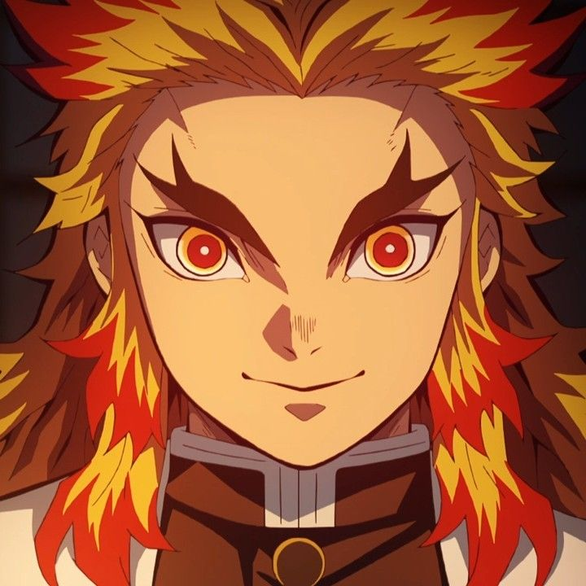

Luis Gustavo Rocha Romanzini
Tenho 18 anos, hoje é dia 16/01/2023 e estou refazendo meu primeiro html. Terminei meu ensino médio em 2021, ficando sem saber oque fazer por um tempo e no início de 2022 eu comecei a me interessar por programação e administração, pesquisei mais e decidi entrar em uma faculdade de Ciências da Computação.
No meu primeiro período pensei em trancar a faculdade, mas com apoio dos meus pais continuei na faculdade e aprendi a gostar de lógica de programação e segui para meu segundo período de faculdade. Nesse mesmo ano, conheci um programador na fila do Major Rio e ele me passou algumas dicas do que fazer e oque procurar no começo da minha carreira, no final de 2022 eu decidi virar desenvolvedor front-end.
Em 2023 assinei o curso da Alura para virar o desenvolvedor que eu gostaria e estou indo para meu segundo ano de faculdade na Udc 3° período, mas procuro estudar em uma universidade extrangeira.
| Benefícios | ||
| Oportunidades | ||
| Culturas novas | ||
| Viver meu sonho | ||
| Aprender coisas novas | Conhecer novas pessoas | |
Terra Materiais de Construção
Loja dos meus pais, onde eu trabalho
Meus Personagens Preferidos
- ⚔️Zoro
- 🍜Naruto
- ü•©Luffy
- ⚔️Shanks
- üö¨Sanji